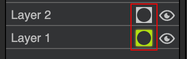

Layers & Masks
DPaint.js supports a full layer stack, similar to modern image editors.
Layers
You can stack multiple layers. Use the Layers panel to reorder, hide, or change the opacity of layers.
Double-click a layer to rename it.
Masks
Layer masks allow for non-destructive editing.
Instead of erasing pixels, you hide them.
- Right-click a layer (or use the menu) to Add Layer Mask.
- Activate the mask by clicking the mask icon next to the layer name - a bright green icon indicates the mask is active.

- When the mask is active, painting on the canvas paints on the mask instead of the layer pixels.
Paint on the mask with Grayscale values:
- White: The layer is fully visible.
- Black: The layer is hidden (transparent).
- Gray: Partial transparency.
- This is useful for complex compositions where you might want to bring back hidden parts later.